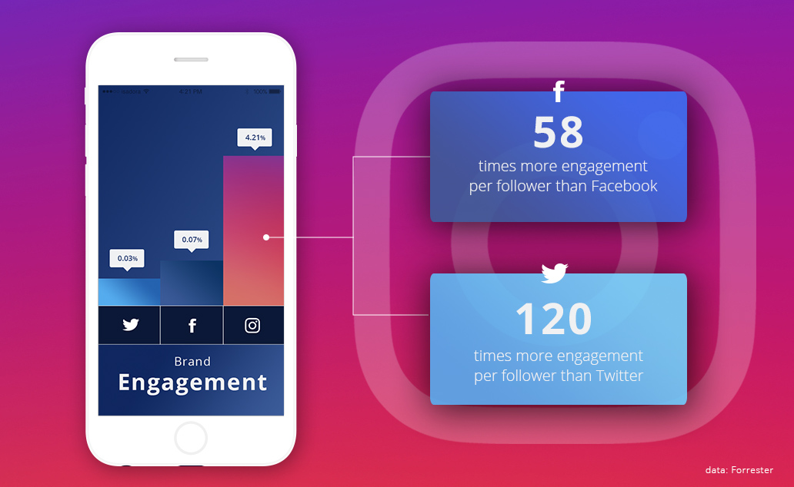
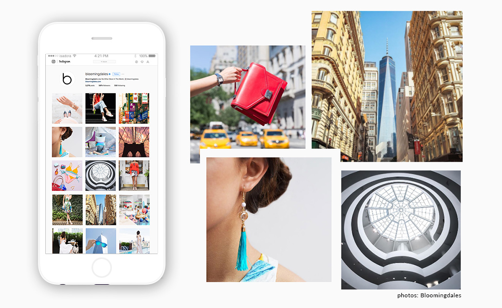

Instagram is a terrific social platform, and Instagram marketing is a great way to promote a brand and showcase visual aesthetic. Compared to Facebook and Twitter, Instagram ranks highest in generating brand engagement. However, simply posting images without much planning will not generate engagement beyond your current followers. Strategically utilizing Instagram and taking time to formulate your marketing approach will increase your brand’s exposure—and revenue. Below are five best practices for promoting your brand on Instagram.

Post high-quality photos
Instagram’s reach is growing, and it’s become much more than just a social network. Instagram marketing takes advantage of this photography portfolio. It also provides you a platform to exhibit your very best shots. Photos taken on DSLRs are of much higher quality than those taken on smartphones, and the difference is noticeable on the app. Since users are naturally attracted to images that look professional, take the time to edit your images. Photos edited on a computer appear different on a phone, so export the original or color-corrected photograph to your phone, then use a mobile app like VSCO or Afterlight to edit further before posting on Instagram. Interesting photo compositions are also key. How do you arrange the objects in the photograph? How do you crop it? How much saturation or filtering do you use? Doing all of this well will make the photos stand out! When thinking of composition, you must take into consideration that this platform is meant for mobile.

Consider a theme
Many professional accounts post pictures based on a color palette. Make a conscious decision to post or not to post around a theme. Again, users like accounts that look current and professional. When the posts are too different from one another, users may interpret this inconsistency as a lack of professionalism or aesthetic. A tasteful color theme or photo style reinforces your brand’s image. This will also push your brand to stand out from the crowd and be more memorable.
Use hashtags & keywords
Instagram allows up to 30 hashtags on a single photo. If you go over the limit, your entire caption will be deleted. Still, 30 hashtag slots are sufficient for you to vary your choices. Check out any combination of choices: general hashtags that are popular across genres; keywords that are specific to your industry; or hashtags that your brand creates. Most importantly, think about who you are trying to attract and what hashtags they are searching. The more hashtags you include, the more likely it is for your post to be discovered by a potential follower. However, be deliberate about the way you use hashtags. Overusing them might seem desperate and hurt your audience’s engagement.
Interact through Instagram marketing
To attract enthusiastic followers on social media, make them feel personally connected to your brand. But first, take some time to find them. What hashtags would people among your target audience use? Search for those hashtags, find their accounts, and then like and comment on their pictures. Users will appreciate your attention, and curiously check out your brand’s account.
There is no penalty or limit for liking posts. Like posts that use hashtags that you use, hashtags you’ve thought about using, and hashtags that are related to your brand—and then like several other pictures on that account that are relevant to your brand. When users like or comment on your posts, reply to them to enforce the personal connection.
Finally, don’t forget to show love to those who already follow. Continue to interact with your current following by liking and commenting on their photos.
Follow accounts
It’s always a good idea to see what your competition is doing and to compare it with your own practices. How many followers does a competitor have? How often are images posted? What content is getting shared? What type of language is used for captions? What strategy is in use for Instagram marketing? How can you learn from all of this and create an effective strategy that meets your objectives?
Think about these points when considering Instagram marketing. Then, take it a step further by actually following the brand on Instagram. Increasing their following by one can mean increasing yours by a lot more. When users look at an account’s followers and spot an interesting account, they will check it out. If your photos are visually striking, your following will grow. It also doesn’t hurt to follow those with large audiences or what we like to refer to as social media influencers. These are the accounts that can really move the needle when it comes to growing brand exposure.